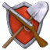
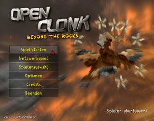
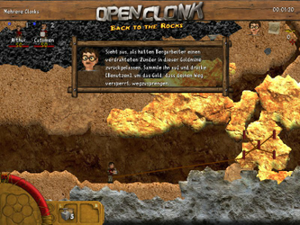
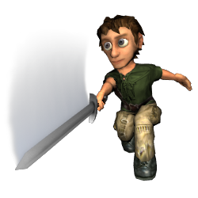
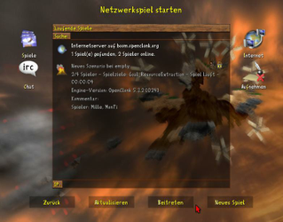

OpenClonk
Dieser Artikel wurde für die folgenden Ubuntu-Versionen getestet:
Ubuntu 14.04 Trusty Tahr
Zum Verständnis dieses Artikels sind folgende Seiten hilfreich:

OpenClonk  ist ein Open-Source-Spiel, das verschiedene Spielgenre miteinander vereint. Neben den Einflüssen von Geschicklichkeitsspielen kommen zusätzlich Aufbaustrategie-, Taktik- und Jump'n'Run-Elemente zum Einsatz, die den Spieler vor eine umfassende Herausforderung stellen. Ziel des Spiels ist es mit den kleinen menschenähnlichen Wesen - den Clonks - verschiedene Missionen zu erfüllen. Zusätzlich zu klassischen Aufträgen wie die Vernichtung des Gegners, existieren viele weitere gewaltfreie Szenarien, in denen individuelle Aufgaben erfüllt werden müssen. Zusätzlich verfügt OpenClonk über einen Mehrspielermodus.
ist ein Open-Source-Spiel, das verschiedene Spielgenre miteinander vereint. Neben den Einflüssen von Geschicklichkeitsspielen kommen zusätzlich Aufbaustrategie-, Taktik- und Jump'n'Run-Elemente zum Einsatz, die den Spieler vor eine umfassende Herausforderung stellen. Ziel des Spiels ist es mit den kleinen menschenähnlichen Wesen - den Clonks - verschiedene Missionen zu erfüllen. Zusätzlich zu klassischen Aufträgen wie die Vernichtung des Gegners, existieren viele weitere gewaltfreie Szenarien, in denen individuelle Aufgaben erfüllt werden müssen. Zusätzlich verfügt OpenClonk über einen Mehrspielermodus.
OpenClonk basiert auf der unter einer freien Lizenz veröffentlichten Spielengine von Clonk Rage. Nachdem die Entwickler von Clonk Rage und dessen vielen vorangegangenen Clonk-Veröffentlichungen die weitere Arbeit an der Spielereihe eingestellt hatten, startete 2010 die Clonk-Community die Entwicklung von OpenClonk. Die verwendete Spielengine wurde durch die Community grundlegend verändert, um neue Funktionen zu implementieren. Hierdurch musste jedoch die Abwärtskompatibilität zwischen den Clonkversionen, die von den ursprünglichen Entwicklern gepflegt wurde, entfernt werden. Somit können aus dieser Zeit bestehende Szenarien und Erweiterungen nicht in OpenClonk verwendet werden.
|  |  |
| Startbildschirm | Tutorial |
Da das Projekt noch recht jung ist, ist die Anzahl der Szenarien recht überschaubar, jedoch kommen mit jeder Veröffentlichung weitere hinzu. Außerdem kann es vorkommen, dass ein Szenario nicht komplett spielbar ist, da unter Umständen einzelne Szenarien lediglich als Tests für neue Funktionen der Entwickler im Spiel enthalten sind.
Installation¶
Paketquelle¶
Das Spiel kann über die Paketverwaltung installiert [2] werden:
openclonk (universe)
 mit apturl
mit apturl
Paketliste zum Kopieren:
sudo apt-get install openclonk
sudo aptitude install openclonk
Im Menü ist es anschließend unter "Spiele → OpenClonk" zu finden.
Archivdatei¶
Auf der Downloadseite  von OpenClonk ist ein .tar.gz-Archiv für Linux verlinkt. Nachdem man dies heruntergeladen und in einen beliebigen Ordner entpackt[1] hat, benötigt man zum Starten des Spiels vorher noch das folgende Paket:
von OpenClonk ist ein .tar.gz-Archiv für Linux verlinkt. Nachdem man dies heruntergeladen und in einen beliebigen Ordner entpackt[1] hat, benötigt man zum Starten des Spiels vorher noch das folgende Paket:
libsdl1.2debian
mit apturl
Paketliste zum Kopieren:
sudo apt-get install libsdl1.2debian
sudo aptitude install libsdl1.2debian
Hat man dies installiert[2], kann das Spiel über die Datei clonk gestartet werden[3]. Bei Bedarf kann ein Menüeintrag erstellt werden[4].
Hinweis!
Fremdsoftware kann das System gefährden.
Desura¶
Nachdem man das Spiel über die Internetseite oder den Client erworben hat, kann das Spiel installiert [6] und über diesen gestartet werden.
PPA¶
Das noch junge Projekt ist nicht in den offiziellen Paketquellen enthalten, kann aber über ein PPA bezogen werden[5]:
Adresszeile zum Hinzufügen des PPAs:
ppa:openclonkdevteam/release
Hinweis!
Zusätzliche Fremdquellen können das System gefährden.
Ein PPA unterstützt nicht zwangsläufig alle Ubuntu-Versionen. Weitere Informationen sind der  PPA-Beschreibung des Eigentümers/Teams openclonkdevteam zu entnehmen.
PPA-Beschreibung des Eigentümers/Teams openclonkdevteam zu entnehmen.
Damit Pakete aus dem PPA genutzt werden können, müssen die Paketquellen neu eingelesen werden.
Das Spiel kann nach dem Freischalten der PPA-Quelle über das folgende Paket installiert werden[2]:
openclonk (ppa)
mit apturl
Paketliste zum Kopieren:
sudo apt-get install openclonk
sudo aptitude install openclonk
|  |
| Clonk |
Benutzung¶
Zu Beginn des Spiels muss ein neuer Spieler (Clonk) erstellt werden. Dies geschieht beim ersten Spielstart automatisch und kann auch später über den Menüpunkt "Spielerauswahl" vorgenommen werden. Dort wählt einen Namen, Spielerfarbe und die gewünschte Steuerung (Tastatur oder Gamepad).
Einzelspieler¶
Zum Starten eines Einzelspielerszenarios wählt man "Spiel starten". Dort werden verschiedene Szenarien inklusive einer kurzen Beschreibung aufgelistet. Einige Szenarien sind ausgegraut und nicht wählbar. Diese sind nur mit mehreren Spielern spielbar. Es empfiehlt sich zu Beginn die angebotenen Tutorials ("Lernrunden") zu spielen. Dort werden die grundlegende Steuerung und die wichtigsten Interaktionen erklärt. Eine Zusammenfassung der am Meisten benötigten Tastenkürzel ist am Ende des Artikels zu finden.
Mehrspieler¶
Der Mehrspielermodus umfasst 3 verschiedene Varianten. Zum einen kann ein Szenario mit mehreren Spielern im lokalen Netz oder über einen Internetserver gespielt werden. Zum anderen mit mehreren Spielern an einem Computer.
|  |
| Netzwerkspiel |
Lokales Netz / Internet¶
Wählt man den Menüpunkt "Netzwerkspiel" werden alle verfügbaren Netzwerkspiele angezeigt. Über die Schaltflächen "Beitreten" und "Neues Spiel" kann man einem von einem anderen Spieler erstellten Spiel beitreten (hierzu muss die OpenClonk-Version aller Spieler identisch sein) oder ein eigenes erstellen und auf Mitspieler warten. Sollte ein Spiel aus dem lokalen Netzwerk nach  auf "Aktualisieren" nicht in der Liste auftauchen, so kann man in das Textfeld "IP" die IP-Adresse des Computers eingeben, auf dem ein Netzwerkspiel erstellt wurde und gezielt nach diesem PC suchen.
auf "Aktualisieren" nicht in der Liste auftauchen, so kann man in das Textfeld "IP" die IP-Adresse des Computers eingeben, auf dem ein Netzwerkspiel erstellt wurde und gezielt nach diesem PC suchen.
An einem PC¶
Hinweis:
Dieser Modus ist im aktuellen Entwicklungsstand noch nicht richtig verwendbar und soll in einer zukünftigen Version komplettiert werden.
Hierzu erstellt man einen weiteren Clonk über den Menüpunkt "Spielerauswahl" und wählt eine noch nicht verwendete Steuerungsart. Anschließend müssen zwei Clonks durch auf das Kästchen vor dem Spielername aktiviert werden. Danach wählt man im Hauptmenü "Spiel starten". Nun wählt man ein Szenario, das für mehrere Spiel konzipiert wurde und startet es.
Konfiguration¶
Über den Menüpunkt "Optionen" können verschiedene Einstellungen zur Grafik, dem Sound und den Netzwerkeinstellungen vorgenommen werden.
Tastenkürzel¶
| OpenClonk | |
| Taste(n) | Funktion |
| W , A , S , D | Clonk bewegen (laufen, klettern, springen, schwimmen, etc.) |
| E | Rucksack öffnen |
| Mit Objekten interagieren (z.B. Truhe öffnen, Kanone anfassen) | |
| R / T | Zwischen Clonks hin- und herwechseln |
| F | Spielermenü |
/  | Gegenstand im linken / rechten Slot benutzen, bzw. dort hineinlegen |
|
⇧ + /
⇧ + | Gegenstand aus linken / rechten Slot wegwerfen |
| F1 | Hilfefenster |
F5 /
F6 oder (Mausrad) (Mausrad) | Zoomen |
| F9 | Bildschirmfoto erstellen. Diese werden im Homeverzeichnis unter ~/.clonk/openclonk/Screenshots/ abgelegt. |

- Erstellt mit Inyoka
-
 2004 – 2017 ubuntuusers.de • Einige Rechte vorbehalten
2004 – 2017 ubuntuusers.de • Einige Rechte vorbehalten
Lizenz • Kontakt • Datenschutz • Impressum • Serverstatus -
Serverhousing gespendet von